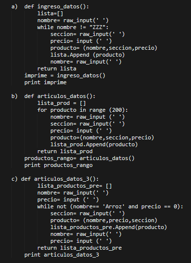
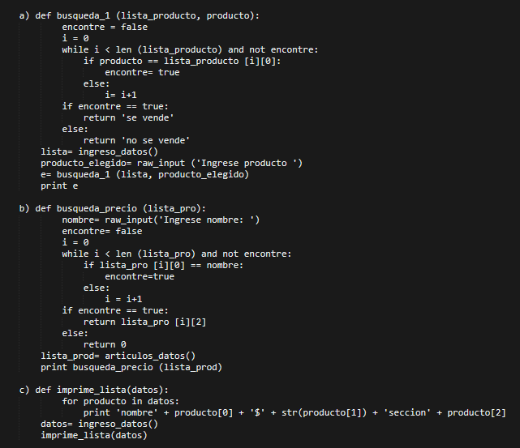
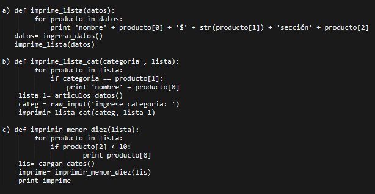
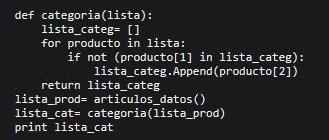
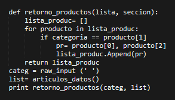
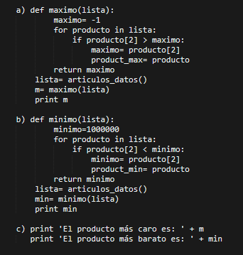

Materia "Fundamentos de informática" utilizando Python en Geany
Temas abarcados
-Entrada y salida por pantalla
-Colecciones
-Condicionales
-Pequeños programas
-Armado de Menú
-Funciones
Trabajo Práctico a modo de ejemplo
Un supermercado requiere construir un sistema para tener un control de sus ventas. Para esto se pide implementar los siguientes puntos:
1) Definir una función que permita ingresar los datos de cada uno de los artículos a la venta. De cada artículo se conoce el nombre, sección a la que pertenece y el precio. La función debe retornar los datos registrados en una lista.
a) Se deben ingresar productos hasta ingresar el nombre del producto "ZZZ".
b) Se sabe que el supermercado tiene a la venta exactamente 200 productos.
c) Se deben ingresar productos hasta ingresar el producto "Arroz" con precio 0.
Por ejemplo, el artículo con nombre "Harina 000", pertenece a la sección "Harinas" y tiene como precio 100 pesos.

2) Búsquedas:
a) Definir una función que dado el nombre de un artículo del supermercado, y la lista de artículos a la venta, retorne si el supermercado vende o no ese artículo.
b) Definir una función que dado el nombre de un artículo del supermercado y la lista de artículos a la venta, retorne el precio del artículo. Si no existe, debe retornar 0.

3) Funciones que listan datos:
a) Definir una función que imprima una lista de precios del supermercado donde se especifique: categoría, nombre del producto y precio.
b) Definir una función que imprima los productos de una categoría dada.
c) Definir una función que imprima todos los productos cuyo precio sea menor a 10 pesos.

4) Definir una función que retorne las categorías definidas en el supermercado. Tenga en cuenta que cada categoría debe listarse una sola vez. Por ejemplo, tengo los artículos "Harina 000", pertenece a la sección "Harinas" y tiene como precio 100 pesos y "Harina Integral", pertenece a la sección "Harinas" y tiene como precio 150 pesos. El sistema debe listar la categoría "Harinas" una sola vez.

5) Definir una función que recibe una categoría y la lista de productos, retorna otra lista con los artículos pertenecientes a la categoría ingresada.

6) Máximos y mínimos:
a) Definir una función que retorne el artículo más caro que vende el supermercado.
b) Definir una función que retorne el artículo más económico que vende el supermercado.
c) Definir una función que retorne el artículo más caro y el más económico que vende el supermercado.

Volver a herramientas
Volver a Página principal